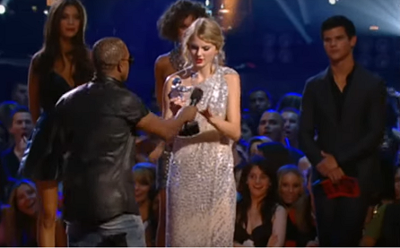

I'm so glad you made time to see me
How's life? Tell me, how's your family?
I haven't seen them in a while
You've been good, busier than ever
We small talk, work and the weather
Your guard is up and I know why
Because the last time you saw me
Is still burned in the back of your mind
You gave me roses and I left them there to die
So this is me swallowin' my pride
Standin' in front of you sayin' I'm sorry for that night
And I go back to December all the time
It turns out freedom ain't nothin' but missin' you
Wishin' I'd realized what I had when you were mine
I'd go back to December, turn around and make it alright
I go back to December all the time
These days, I haven't been sleepin'
Stayin' up playin' back myself leavin'
When your birthday passed and I didn't call
Then I think about summer, all the beautiful times
I watched you laughin' from the passenger's side
And realized I loved you in the fall
And then the cold came, the dark days
When fear crept into my mind
You gave me all your love and all I gave you was goodbye
So this is me swallowin' my pride
Standin' in front of you sayin' I'm sorry for that night
And I go back to December all the time
It turns out freedom ain't nothin' but missin' you
Wishin' I'd realized what I had when you were mine
I'd go back to December, turn around and change my own mind
I go back to December all the time
I miss your tan skin, your sweet smile
So good to me, so right
The first time you ever saw me cry

Maybe this is wishful thinkin'
Probably mindless dreamin'
But if we loved again, I swear I'd love you right
I'd go back in time and change it, but I can't
So if the chain is on your door, I understand
But this is me swallowin' my pride
Standin' in front of you sayin' I'm sorry for that night
And I go back to December
It turns out freedom ain't nothin' but missin' you
Wishin' I'd realized what I had when you were mine
I'd go back to December, turn around and make it alright
I'd go back to December, turn around and change my own mind
I go back to December all the time
All the time